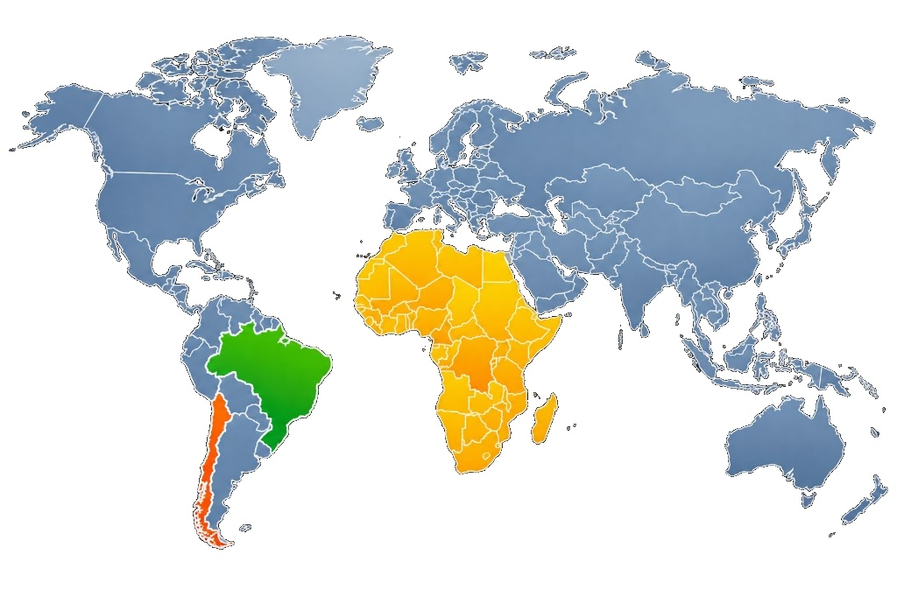

Módulo 1 | Aula 3
Núcleos de Evidências e Redes de Pesquisa em PIE
A Abordagem Metodológica: Ferramentas SUPPORT
Conforme já mencionado, a EVIPNet Brasil consolidou-se como plataforma de tradução do conhecimento para o SUS. A rede adota as ferramentas Supporting Policy Relevant Reviews and Trials (SUPPORT) como principal referencial metodológico para o desenvolvimento de suas atividades institucionais, promovendo capacitações, elaboração de sínteses de evidências, organização de diálogos deliberativos e desenvolvimento de ferramentas para ampliar o uso de PIE.
A abordagem metodológica da EVIPNet emprega métodos sistemáticos e transparentes para identificar, selecionar e avaliar evidências de pesquisa sintetizadas. As sínteses de evidências consideram qualidade, aplicabilidade local e questões de equidade ao discutir as evidências de pesquisa sintetizadas. Esse rigor metodológico distingue os produtos da EVIPNet de outras formas de síntese de conhecimento menos sistemáticas.
As Ferramentas SUPPORT foram apresentadas em uma série de 18 artigos publicados em 2009 na revista Health Research Policy and Systems, posteriormente traduzidos ao português e disponibilizados na internet.
Se quiser saber mais sobre as ferramentas SUPPORT, clique aqui.
Caso queira encontrar as ferramentas SUPPORT em português ou em outras línguas, clique aqui.
Clique nas áreas coloridas do mapa para ver os exemplos de vinculação.

No contexto brasileiro, além dos núcleos vinculados à EVIPNet Brasil, existem iniciativas independentes ou vinculadas a hospitais e instituições de pesquisa. O Centro Cochrane do Brasil, coordenado pela Universidade Federal de São Paulo (Unifesp), colabora com o Ministério da Saúde. O Hospital Sírio-Libanês exemplifica um modelo de núcleo vinculado a instituição hospitalar privada.
Outros ministérios têm trabalhado para instituir redes de PIE, a exemplo da Rede Nacional de Evidências em Direitos Humanos ReneDH.